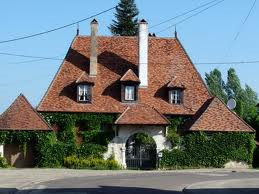
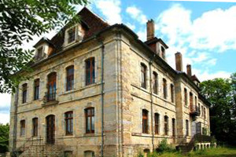
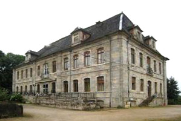
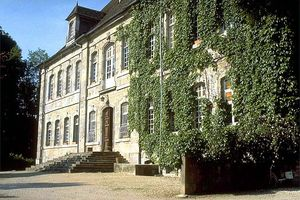
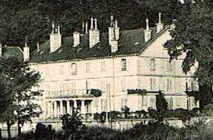
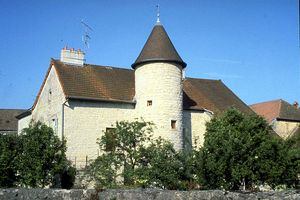
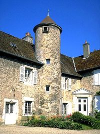
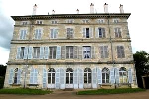
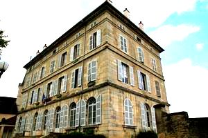

Recensement Jean-Claude Truffet
| Département | 39 — Jura |
| Canton | Dampierre |
| Commune | Fraisans |
| Type d'édifice | Manoir |
| Période d'origine | XVII |









FRAISANS, appartenait aux comtes de Bourgognes. Anciennes résidences de maîtres de forges. Les plus anciennes demeures sont celles des frères Nardin construites au XVIe siècle, vient ensuite, château BRUNET destiné à Jean de Pourcheresse, possesseur des forges de Fraisans depuis 1708 est achevé en 1715, érigé en fief en 1730, vendu comme bien national en 1795. Acquis par Mme de Pourcheresse épouse de Brunet de la Renaudière-Puisaye en 1837, vendu à la commune en 1865 pour le compte des haut-fourneaux, il est transformé en 1968 en maison de retraite. Le Château NARDIN du XVIe siècle, Le petit château est bâti en 1741 pour Jacques-François de Pourcheresse, maître des forges de Fraisans, acheté en 1796 et en 1803 par André Caron qui le revend en 1934 à Kaiser-Morel. Château des FORGES, de 1822 à 1825 François Caron fait bâtir le logement patronal , rebaptisé la GERANCE. En 1778, Joseph-Antoine Pourcheresse fit ériger Fraisans en marquisat. A la veille de la Révolution de 1789, Joseph-Antoine de Pourcheresse se trouvait à la tête de l'usine la plus considérable de la province. Après son émigration en 1790, ses biens furent confisqués et mis en vente. Les frères Caron, André et Léonard, maîtres de forges pour les Pourcheresse, se portèrent acquéreurs. VERMOT, Théodore Caron, maître de forges construit le château sur le rocher du Cheval Blanc, à la place d'un ancien hôtel. L'édifice est rebaptisé château de Vermot, du nom de l'abbé qui le rachète pour y établir une maison de retraite pour prêtres. En 1858, le société des forges l'achète, l'aménage et y établit l'école de garçons.
Fraisans; il ne reste plus rien du château fort de Fraisans détruit en 1477. Un petit château fut construit dans la commune en 1741 et au sommet de la colline, l'imposant château construit au XIXe siècle est devenu hôtel de ville , immense bâtisse à plusieurs étages avec balcon supporté par six colonnes d'ordre classique. Château de Nardin, maison-forte du XVIe siècle flanqué d'une tour ronde. Château de Brunet; du XVIIIe siècle corps de logis rectangulaire à deux niveaux et attiques, légère avancée sur le pavillon d'entrée, et balconnet au premier. Château des Forges, dit de la Gérance corps de logis rectangulaire à trois niveaux avec balcon soutenu par six colonnes doriques. Vermot; construction en 1822-1825, cette magnifique demeure, protégée au titre de monument historique pour son architecture, depuis 1868 abrite l'hôtel de ville et sert de logement pour l'instituteur. A l'intérieur on peut contempler le grand escalier ainsi que de belles fresques. L'orangerie, en contre bas, complète à l'époque cet imposant ensemble patronal. Les serres et les dépendances sont remplacées en 1858 par un immeuble qui loge les chefs de services de la société des Forges.
Dame de Pourcheresse, Théodore Caron
"
Château à Fraisans, petit Château, Brunet, Nardin, des forges dit la Gérance, de Vermot etc.